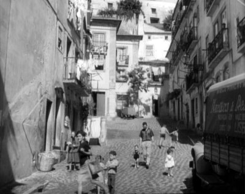
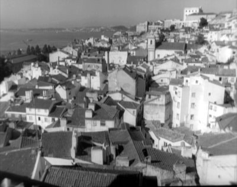
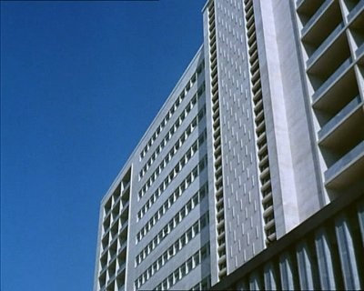
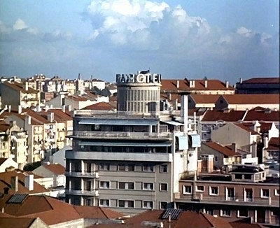
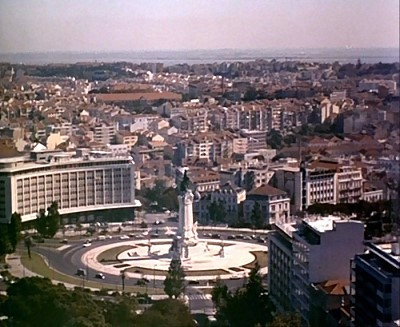
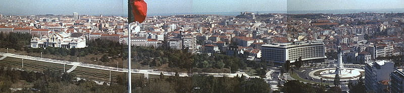
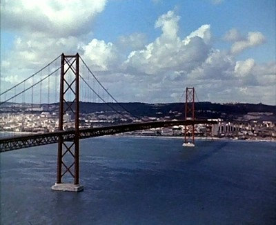

Cascais Beach
DANGER MAN: English Lady Takes Lodgers
(Michael Truman 1965)
Establishing an stock shot of Portugal.
(Identified by Stephan Thien, February 2009)
Alfama


DANGER MAN: English Lady Takes Lodgers (Michael Truman 1965)
Establishing shot Lisbon including Rua da Adiça and View from the roof of Igreja de Santo Estêvão.
(Identified by Sietse Postma, July 2023)
Hotel Ritz, Rua Rodrigo da Fonseca

THE CHAMPIONS: Twelve Hours (Robert Asher:
Late 1967)
Craig Sterling is visiting an hotel in Athens when he is called upon to
use his super-human powers to their best advantage by climbing the
stairs to a top floor.
Jason's hotel whilst he is investigating Señor Ramos.
(Spotted by Paul Stroud, October 2008) Comfort Inn Embaixador, 73 Avenue Duque de Loule

MAN IN A SUITCASE:
Variation on a Million Dollars Part 1
(Pat Jackson: November 1966)
Bert meets with Max in a Lisbon hotel room to discuss his plans the
money.
DANGER MAN: English Lady Takes Lodgers
(Michael Truman 1965)
A Comet with John Drake aboard arrives at Lisbon Airport.

MAN IN A SUITCASE:
Variation on a Million Dollars Part 1
(Pat Jackson: November 1966)
Establishing shot of Lisbon.
(Spotted by Paul Stroud, May 2008)

DEPARTMENT S: Soup of the Day (Leslie Norman: Spring 1969)Lisbon establishing shot as Jason is in Portugal investigating Señor Ramos.
(Spotted by Paul Stroud, October 2008) Ponte 25 de Abril

MAN IN A SUITCASE:
Variation on a Million Dollars Part 1
(Pat Jackson: November 1966)
Establishing shot of Lisbon.
(Spotted by Paul Stroud, May 2008)
DANGER MAN: English Lady Takes Lodgers
(Michael Truman 1965)
Establishing shot Lisbon


THE CHAMPIONS: The Iron Man (John Moxey: June
1967)
Establishing shot of the capital city of La Revada.
Establishing shot of Lisbon at night as Jason breaks into Ramos & Ca. Lda..
(Spotted by Paul Stroud, October 2008) Mealhada
Bussaco Palace Hotel, Estrada Florestal

DANGER MAN:
A Date with Doris (Quentin
Lawrence: 1964)
Palace occupied by Patatore.
(Idenitfied by Paul Stroud, May 2014)
DANGER MAN: The Affair At Castelevara
(Quentin Lawrence: 1964)
Prison at Santa Christina where Torres is held.
(Idenitfied by Paul Stroud, May 2014)
DANGER MAN: Sting in the Tail (Peter
Yartes: 1964)
Two of Noureddine’s thugs arrive at assassin’s home to him know that
Marie Valedon has driven off with Drake.
(Idenitfied by Paul Stroud, May 2014)
Return to Index